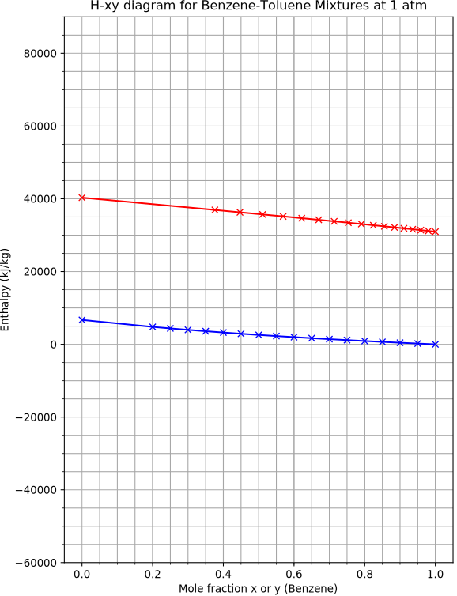
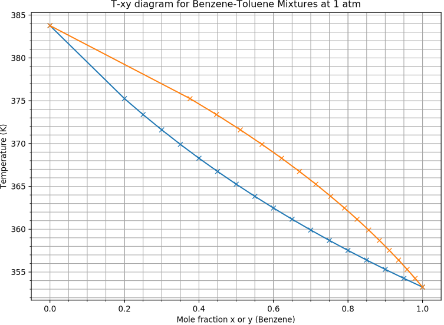

Ponchon-Savarit Analysis (Non-CMO Distillation)
-
To size our
multi-stage distillation columns, we
- Calculate the number of theoretical trays required.
- Convert this into a number of real stages using efficiencies.
- At the moment, we do this using the McCabe-Thiele method. This is a graphical method for solving simultaneous mass balances and Vapour-Liquid Equilibrium data.
-
These are:
- The enrichment section operating line: \begin{align*} y_n &= x_{n+1}\frac{L_{n}}{V_n} + x_D\frac{D}{V_n} \end{align*}
- The stripping section operating line : \begin{align*} y_{m} = x_{m+1}\frac{L_m}{V_m} - x_{W}\frac{W}{V_m} \end{align*}
- The feed section q line: \begin{align*} y &= x\frac{q}{q-1} - \frac{x_{W} W + x_D D}{F (q-1)} \end{align*}
- VLE The data: \begin{align*} y = f(x) \end{align*}

- The above equations (with the exception of the VLE data) required the assumption of Constant Molar Overflow.
- This assumes that the flow rates in the top/enrichment section ($L_n$, $V_n$), and the bottom/stripping section ( $L_m$, $V_m$) remain constant over the length of the section.
- This allows us to conveniently ignore energy but what does this really mean…
- To understand the constant molar overflow approximation, we must look at a balance over a single stage (right).
- A vapour stream $V_{n-1}$ and a liquid stream $L_{n+1}$ mix to produce a liquid stream $L_n$ and a vapour stream $V_n$ which are in equilibrium.
- Constant molar overflow assumes that $V_{n-1}=V_{n}$ and $L_{n+1}=L_{n}$!
- But if the input streams are not in equilibrium, there must be some mass and/or heat transfer.
- When exactly is the CMO assumption true?

- Let us take the simplest system, pure water/steam.
-
For constant molar overflow to be true:
- All streams must be exactly at their boiling/dew point at the pressure of the tray.
- No heat can be transferred in or out of the tray (the tray is adiabatic).
- The vapour stream is superheated and/or the liquid stream is subcooled and/or there are heat losses; however, these all cancel out.
- Even for this simple system, there are a number of ways CMO might be satisfied, but they are likely to be broken in a real system.
- Let us take a more complex system such as a mixture of two components (i.e., Benzene-Toluene). Performing an energy balance, we have \begin{align*} h_{V,n-1} V_{n-1} + h_{L,n+1} L_{n+1} = h_{V,n} V_{n} +h_{L,n} L_{n} + Q \end{align*} where $Q$ is any heat gain or loss from surroundings.
- If constant molar overflow is true, then we can write: \begin{align*} \left(h_{V,n-1}-h_{V,n}\right) V_{n} + \left(h_{L,n+1}-h_{L,n}\right) L_{n} = Q \end{align*}
- Proving this equation is true is equivalent to proving that CMO is exact.
\begin{align*}
\left(h_{V,n-1}-h_{V,n}\right) V_{n} + \left(h_{L,n+1}-h_{L,n}\right) L_{n} = Q
\end{align*}
- Assuming no heat losses $Q=0$ and that $L_n$ and $V_n$ may take arbitrary values, the equation requires that the specific enthalpy of the vapour and liquid streams must not change ( $h_{V,n-1}=h_{V,n}$ and $h_{L,n+1}=h_{L,n}$).
- But this isn't true in general, enthalpy is a function of temperature (think heat capacity) and as the concentration of the streams change so does the boiling point/temperature of the stage.
- There are also other effects causing the enthalpy to change, such as enthalpy of mixing/solution (see evaporator design). As concentration changes on each stage these effects can be significant making the CMO assumption invalid.
\begin{align*}
\left(h_{V,n-1}-h_{V,n}\right) V_{n} + \left(h_{L,n+1}-h_{L,n}\right) L_{n} = Q
\end{align*}
- Sometimes, as process engineers, we even introduce heat losses $Q\neq0$ to give us extra stages of distillation (see right).
- In this case we clearly violate CMO, for the purpose of keeping our process “traditional” yet increasing its effectiveness.
- In practice, the CMO assumption is valid for a range of ideal systems where the latent heat of vaporisation does not vary significantly for all concentrations of the mixture, and effects such as latent heat changes, enthalpy of solution, and energy losses can be ignored.
- But there are a large number of systems where CMO does not hold, and we must include a full enthalpy balance in our calculations!

- The enthalpy of a stream can be calculated using an appropriate thermodynamic path, and heat capacity data combined with appropriate latent heats: \begin{align*} h_{mixture}(T) = x_A h_{\textrm{A}}(T=T_{ref}) + (1-x_B)h_{\textrm{B}}(T=T_{ref}) \\ + x_A h_{sol.,AB}(T=T_{ref}) + \int_{T_{ref}}^T C_{p,mixture}(T') {\rm d}T' \end{align*}
- The modern approach is to take these equations for the enthalpy and solve them simultaneously with the energy and mass balances to determine the design of a non-CMO column.
- However, here we will use graphical methods to perform the design as these are useful teaching tools to illustrate how these methods proceed.
- Lets reconsider enthalpy-concentration diagrams which we first saw when we were designing evaporators. These will form the basis of the Ponchon-Savarit method we will cover later.


- We also need to solve the VLE data for the design. This may be in the form of a separate $x$-$y$ graph, or we might draw additional tie-lines on the $H$-$xy$ diagram which indicate the equilibrium vapour and liquid concentrations.
- In this graph, its easy to see that these tie-lines connect the corresponding isothermal lines on either side of the two-phase region, but when you construct a $H$-$xy$ diagram you will probably not generate these, so they may be missing.

- Enthalpy-concentration diagrams have a number of interesting properties. Consider a collection of points, each of which represents a certain mixture of hexane and octane.
- The height difference between two points is actually the difference in energy per unit mass. For example, if we were considering the heating of $A\to B$, we have $h_A + \frac{Q}{m} = h_B$. Using this chart we can quickly calculate how much energy is needed to heat a mixture up.
- If we choose a boiling point (i.e., $T=90^\circ$ C), the height difference between the two points on the co-existence lines is the latent heat of vaporisation.

- Assuming we take two mixtures $A$ and $B$ with $m_A$ and $m_B$ moles/mass respectively. If we mix them to form $C$, we have: \begin{align*} m_A + m_B &= m_C\\ m_A x_A +m_B x_B &= m_C x_C\\ m_A h_A + m_B h_B &= m_C h_C \end{align*}
- It is easy to see that the enthalpy of two mixtures combines linearly, just like the mass and the concentration (and unlike the temperature).
- This implies that any mixture of $A$ and $B$ must lie on the line $AB$ ! For example, the point $C$.
- Where it lies on the line depends on the amount of $A$ versus $B$.

- It is clear that lines on $H$-$xy$ diagrams are in-fact simultaneous mass and enthalpy balances.
- For example, if a mixture $C$ is created, it will split to form two phases $A$ and $B$, these points will lie on the equilibrium tie-line passing through $C$. This is a flash calculation on a $H$-$xy$ diagram!
- If we draw operating lines (simultaneous mass and energy balances in the column) on this diagram, they are always straight lines (McCabe Thiele operating lines are curved when CMO is violated).
- We can now begin to design a distillation column without making the constant molar overflow assumption.
- The graphical method we're about to derive is known as the Ponchon-Savarit method, and was named after its discoverers.
- It is very similar to the McCabe-Thiele method, but is more rigorous and complex as it considers enthalpy changes within the column.
- The first step is to derive operating line equations for the design.
- Performing overall and component mass balances over the top (enrichment) section of the column we have: \begin{align*} V_n&=L_{n+1}+D \\ y_n V_n&=x_{n+1} L_{n+1}+x_D D \end{align*}
- Eliminating $V_n$, we have: \begin{align*} \frac{L_{n+1}}{D}&=\frac{x_D-y_n}{y_n-x_{n+1}} \end{align*}
- We can also perform an enthalpy balance \begin{align*} h_{v,n} V_n&=h_{l,n+1} L_{n+1}+h_{l,D} D + Q_c \end{align*} where $Q_{c}$ is the condenser duty.

\begin{align*}
V_n&=L_{n+1}+D \\
h_{v,n} V_n&=h_{l,n+1} L_{n+1}+h_{l,D} D + Q_c
\end{align*}
- Let $h_D'=h_{l,D}+Q_{c}/D$ and we can rewrite our enthalpy balance: \begin{align*} h_{v,n} V_n-h_{l,n+1} L_{n+1}&=h_{D}' D \end{align*} and it is clear that $h_{D}' D$ is the (constant) enthalpy difference between the vapour stream emerging from the column and the reflux stream returned to top section of the column.
- Eliminating $V_n$ using the overall mass balance we have \begin{align*} h_{v,n}(L_{n+1}+D)-h_{l,n+1} L_{n+1}&=h_{D}' D\\ \frac{L_{n+1}}{D} &=\frac{h_{D}'-h_{v,n}}{h_{v,n}-h_{l,n+1}} \end{align*}
- Setting the two expressions for $L_{n+1}/D$ to be equal, we have: \begin{align*} \frac{h_{D}'-h_{v,n}}{h_{v,n}-h_{l,n+1}} = \frac{x_D-y_n}{y_n-x_{n+1}} \end{align*}
\begin{align*}
\frac{h_{D}'-h_{v,n}}{h_{v,n}-h_{l,n+1}} &= \frac{x_D-y_n}{y_n-x_{n+1}}
\\
h_D'&=h_{l,D}+Q_{c}/D
\end{align*}
- This is our operating line for the top section of the column.
- $h_{D}'$ and $x_D$ can be worked out at the start of a design (after selecting a reflux ratio) and the operating line gives us a relationship between $(x_{n+1}, h_{l,n+1})$ and $(y_{n}, h_{v,n})$.
- Provided we have a $H$-$xy$ diagram we can solve for one pair given the other (but there is now a different operating line for each stage in the top section).
- But, if we set either $(x_{n+1}, h_{l,n+1})$ OR $(y_{n}, h_{v,n})$ to $(x_d,h'_d)$, the equation is satisfied for any value of the other: i.e. $(x_d,h'_d)$ is a pole point.
- All operating lines for stages in the top of the column must pass through this pole point, which we denote $P_C$.
- This is what a design of the top-section looks like.
- We calculate the location of $P_C=(x_d,h'_d)$, then all operating line must pass through this point.
- The first location in the column is the distillate vapour concentration $y_N$ or $x_D$, so we start the stepping there.
- The tie-lines/VLE data allows us to calculate $x_N$, which allows us to draw the next operating line.
- We can then progress down the column, alternately solving mass/energy balances and the VLE data for the compositions on each stage!

- The exact same analysis for the bottom section yields the following equation: \begin{align*} \frac{h_w'-h_{v,m}}{h_{v,m}-h_{l,m+1}}&=\frac{x_w-y_m}{y_m-x_{m+1}} \end{align*} where $h_w'=h_{l,w}-Q_R/W$, and $Q_R$ is the reboiler duty.
- We can calculate $Q_R$ using an enthalpy balance over the whole column.
- Here it is clear that there is a pole for this equation at $(x_w,h_w')$, which we denote $P_R$.
- We can perform the same construction as before to calculate the stage-by-stage concentrations within the column (see right).

- These constructions allow the top and bottom section of the column to be designed, but these processes must meet at the feed tray.
- We need to find a relationship to locate the feed tray relative to the top and bottom sections.
- Taking an overall balance we have: \begin{align*} F &= W + D & x_F F &= x_W W + x_D D \end{align*} And eliminating $F$ gives: \begin{align*} \frac{W}{D}=\frac{x_D-x_F}{x_F-x_W} \end{align*}
\begin{align*}
F &= W + D & x_F F &= x_W W + x_D D
\end{align*}
- We can also perform an overall enthalpy balance: \begin{align*} Q_B + h_F F = h_{l,W} W+h_{l,D} D+Q_c \end{align*}
- Introducing $h_w'=h_{l,w}-\frac{Q_B}{W}$ and $h_D'=h_{l,D}+Q_{c}/D$ into the energy balance we have \begin{align*} h_F F &= h_W' W+h_D' D+Q_c\\ \frac{W}{D}&=\frac{h_D'-h_F}{h_F-h_W'} \end{align*}
- Combining these two expressions for $W/D$ gives: \begin{align*} \frac{h_D'-h_F}{h_F-h_W'}&=\frac{x_D-x_F}{x_F-x_W} \end{align*}
\begin{align*}
\frac{h_D'-h_F}{h_F-h_W'}&=\frac{x_D-x_F}{x_F-x_W}
\end{align*}
- If $h_F$ and $x_F$ are our free variables, then it is clear to see that this equation has a solution at $(x_F,h_F)=(x_D,h'_D)$ and $(x_F,h_F)=(x_W,h'_W)$.
- Therefore, the feed point $P_F=(x_F, h_F)$, condenser pole point $P_C=(x_D,h'_D)$, and reboiler point $P_W=(x_W,h'_W)$, all lie on the same (straight) line on a $H$-$x$ diagram!
- Performing a flash from the feed location $P_F$ gives us the starting points for the top and bottom feed sections.
- From here we proceed to determine how many stages it takes to reach the bottoms and top product concentrations.

- At this point it is easy to talk about the reflux ratio.
- The height of the point $P_C$, given by $h_D'=h_{L,D}+Q_{c}/D$ is set by the reflux ratio which controls the duty of the condenser.
- From an overall energy balance over the column we know that as the duty increases on the condenser, so does the reboiler duty. Higher reflux ratios lower the height of point $P_W$, given by $h_W'=h_{L,w}-Q_R/W$.
- As the reflux ratio increases, the slope of the operating lines increase, eventually leading to vertical lines at infinite reflux ratio…

- What about the other limit (infinite trays/minimum reflux ratio)?
- Here, the same rule applies as for McCabe-Thiele design, operating lines must not cross equilibrium lines!
- As the reflux ratio is lowered, the points $P_C$ and $P_R$ approach the saturation lines, lowering the gradient of the operating lines.
- Eventually, one of the operating lines coincides with its VLE tie-line, meaning that there is no separation over that stage.
- This typically happens at the feed tray (see the pinch right), so we can just extend the tie line at this location to calculate the minimum reflux ratio (but we must also check for crosses at any other stage to determine if there is another pinch point elsewhere).

- From here, we can use an energy balance to calculate $R_{min}$. For example: \begin{align*} \frac{Q_c}{D} &= h'_D-h_{L,D}\\ \left(h_{V,D}-h_{L,D}\right)\frac{V}{D} &= h'_D-h_{L,D}\\ \left(h_{V,D}-h_{L,D}\right)\frac{L+D}{D} &= h'_D-h_{L,D}\\ R = \frac{h'_D-h_{L,D}}{h_{V,D}-h_{L,D}}-1 \end{align*}
- These values can be directly measured from the enthalpy graph.
- We're going to perform a distillation design of a Benzene-Toluene mixture using the Ponchon-Savarit method.
- We need to construct an enthalpy diagram. There is a worked example for Benzene-Toluene in Ex.11.6-1 (pg 670–672) of “Transport Processes and Unit Operations” by C. J. Geankoplis.
- We also need equilibrium data/VLE data. To revise how to generate this, see your solutions to Tutorial 5, the design course, or Ex.11.1-1 (pg 641–642) of “Transport Processes and Unit Operations” by C. J. Geankoplis.

This data is calculated using heat capacity and
formation enthalpy data from “NASA Glenn Coefficients for
Calculating Thermodynamic Properties of Individual Species”
by McBride, B.J., M. J. Zehe, Dr.and Gordon, S. NASA
TP-2002-211556, 2002.

This data is calculated using Raoult's law and vapour
pressure data (Antoine coefficients) taken from Perry's.
- We can combine this data by reading pairs of $x$-$y$ values from the $T$-$xy$ diagram and plotting these lines on the $H$-$xy$ diagram. We could also just use the figures directly.
- For the worked example, we're going to distill a 50 mole% Benzene saturated liquid feed to two product streams at 20 mole% and 90 mole% purity.
- The optimum reflux ratio is known to be $1.5 R_{min}$ from experience.
- It is well-known that Benzene-Toluene systems are good candidates for assuming CMO, but this is just to illustrate the method.
- We can determine the minimum reflux ratio by checking for pinches in the column design.
- These usually occur near the feed, so we'll start there and use it to predict the minimum $P_C$ position.
- We can then calculate the minimum reflux ratio using the expression derived before. \begin{align*} R = \frac{h'_D-h_{L,D}}{h_{V,D}-h_{L,D}} - 1 \approx 0.91 \end{align*}
- The optimum reflux ratio is then $R=1.5\times0.91=1.092$, and we can use the expression above to plot the actual condenser pole point $P_C$.

- We know that $P_{C}$, $P_{F}$, and $P_{R}$ must lie on the same line, therefore we can now determine $P_R$.
- From here, we can start our distillation design. We will start at the feed tray and solve each section from there.

- In this case, we require a reboiler and almost exactly 7 theoretical stages.
- We can still have fractional stages which we compute using the distance along the equilibrium lines, but it is not needed in this case.
- We could also include Murphree efficiencies, although this would be simpler to implement with a separate $x$-$y$ diagram rather than the tie-lines on the $H$-$xy$ diagram.
- Finally, we can immediately calculate the reboiler and condenser duties from the graph using the following expressions: \begin{align*} h_D'&=h_{l,D}+Q_{c}/D\\ h_w'&=h_{l,w}-Q_R/W \end{align*}